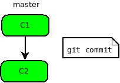

Git de survie (ou pas)
Prise en main rapide de git pour ASR
Geoffroy Desvernay / Arnaud Salvucci
(Pour)?quoi versionner
- Eviter le syndrôme .(bak)^n
- Traçabilité
- Facilité de réplication/PRA
- Puppet/Chef/... c'est déjà prévu...
- ...depuis 3 ans (@ ECM)
- mais ITIL Capable ?
Pourquoi git ?
- Parce que c'est
hypetrès utilisé et donc très documenté - Multi os
- pas de .svn, CVS dans tous les répertoires (eg: conf.d/)
- Utilisation distribuée et/ou locale
- Pour son système de branche léger et intuitif
Comment ça marche ?
git initdans le répertoire du projet pour créer le repository- création d'un fichier .gitignore qui contient les fichiers (dossiers, pattern de fichier...) que l'on ne veut pas versionner
git add .pour ajouter tous les fichiers dans le repository.
Comment ça marche ?
Comment ça marche ?
M...., pourquoi le DHCP tourne plus ?
git log /usr/local/etc/dhcpd.confcommit 2f8e82d5fe0230bd1469ffb24159b60e12bea6b1 Author: Geoffroy Desvernay <dgeo@centrale-marseille.fr> Date: Wed Jun 25 23:20:16 2014 +0200 finalement, back to linux commit 7b41ef11383feab1f86600628c1f44a5d4a5c701 Author: Geoffroy Desvernay <dgeo@centrale-marseille.fr> Date: Wed Jun 25 23:19:18 2014 +0200 install pxe freebsd pour pcd
Mais il a fait quoi ce … ?
git diff 7b41ef1..2f8e82ddiff --git a/usr/local/etc/dhcpd.conf b/usr/local/etc/dhcpd.conf index 6d58126..93f611b 100644 --- a/usr/local/etc/dhcpd.conf +++ b/usr/local/etc/dhcpd.conf @@ -641,9 +641,9 @@ option domain-name-servers 147.94.19.141; hardware ethernet 00:21:70:bd:fa:cf; fixed-address 147.94.19.170; next-server 147.94.19.145; - filename "freebsd/amd64/10-live/boot/pxeboot"; - option root-path "sheep.ec-m.fr:/tftpboot/freebsd/amd64/10-live"; - #filename "pxelinux.0"; +// filename "freebsd/amd64/10-live/boot/pxeboot"; +// option root-path "sheep.ec-m.fr:/tftpboot/freebsd/amd64/10-live"; + filename "pxelinux.0"; } host pcd2 { hardware ethernet 00:1c:23:20:5b:38;
ca marchait mieux avant !
git revert 2f8e82d5fe0230bd1469ffb24159b60e12bea6b1service isc-dhcpd restart
Euh, on peut avoir pareil, mais en 5mn ?
#!/bin/sh
apt-get install git
cd /
git init
git add /etc /root # plus fin c'est mieux
git commit -m "Premier import"
Mouais… et les finesses ?
- dans /root/.profile
# pour pouvoir taper 'git' ailleurs que dans / export GIT_DISCOVERY_ACROSS_FILESYSTEM=yes - dans /.gitignore
*~ *\# *.bak *.orig *.sample *.dpkg-old mtab
Et c'est tout ?
git commit a chaque modification
Les branches

Les branches
Les branches
Les branches
Les branches
Les différents workflows
Git peut tout faire, même le pire: c'est a vous de vous organiser
Le cowboy solitaire
git init; git add; git commit
Dépôt central
git pull --rebase; git commit; git push
Intregration ma-nageur
git fetch
Le dictateur

git blame; git torture (n'essayez pas ça chez vous !)
Les bonnes pratiques
Messages de commit: 50/72
Ajout de pc-machine1
J'ai ajouté dans le DNS et le DHCP une nouvelle machine.
Ceci rentre dans mes attributions d'après la note de service
du 03/04/2011 signée par MM Dubroc et Duchmol.
Pour aller plus loin
- La référence : http://git-scm.com/
- Un tuto interactif pour débuter avec git : https://try.github.io
- Un tuto pas à pas bien fait : http://githowto.com/
- Un rappel des commandes principales avec des schémas qui vont biens http://wildlyinaccurate.com/a-hackers-guide-to-git